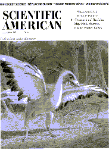
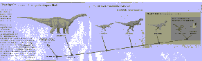
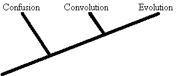

| Feature Article - March 1998 |
| by Do-While Jones |

Tabloids are publications sold in supermarkets that put misleading pictures and sensational captions on their covers to stimulate sales. Using that criteria, the February 1998 issue of Scientific American is a tabloid. Its cover shows something that looks like a ferocious chicken, with the caption, "Both a bird and a dinosaur." The table of contents, summarizing the article on "The Origin of Birds and Their Flight" says,Fossil discoveries and anatomical evidence now overwhelmingly confirm that birds descended from small, two-legged, meat-eating dinosaurs. Birds can in fact be classified as dinosaurs--specifically, as members of the theropod lineage. Feathers and other "definitively" avian features seem to have appeared first as hunting adaptations in speedy, ground-based animals. Only later were they co-opted and refined for flight by the group recognized as birds.
Can birds really be classified as dinosaurs? That all depends upon who makes the definitions and who evaluates the criteria. Classification is subjective. In the introduction to her latest book, Harriet Ritvo says,
As anthropologists have repeatedly pointed out, the classification of animals, like that of any group of significant objects, is apt to tell as much about the classifiers as the classified.1
Her book is a real eye-opener about the subjectivity of the classification process. She explains why "the category 'quadrupeds' [four-footed] could nevertheless encompass warm-blooded unfeathered creatures with no feet (whales) and with two feet and two wings (bats)."2 She discusses the problems with all the various classification systems tried over the years, including those based on where the creature lives, what it eats, shape of its head, number of cerebral lobes, reproductive system, internal organs, and foot shape.3 By the time you finish reading the first chapter you will be thoroughly convinced that the classification of animals is determined more by personalities and politics than anything else.
The authors of the Scientific American article have established some criteria that define what a dinosaur is. They evaluate birds according to that criteria, and come to the subjective conclusion that because a bird has some imaginary remnants of fingers and a half-moon shaped wrist bone, birds must be dinosaurs. Not just related to dinosaurs--they say birds actually are dinosaurs.
Every time bird bones and dinosaur bones are similar, the article says it proves birds and dinosaurs evolved from a common ancestor because the bones haven't changed. Every time bird bones and dinosaur bones differ, the article says it is because they evolved. In other words, they say lack of change is evidence for evolution. Then they say change is also evidence for evolution. Everything is evidence for evolution in their eyes because evolution is in the eye of the beholder.
Spread across pages 40 and 41 of the Scientific American article is a cladogram showing the relationship of a Titanosaurus to a pigeon. Then it describes how cladograms "prove" the evolutionary relationship.
 |
|---|
This method--called phylogenetic systematics or, more commonly, cladistics--has since become the standard for comparative biology, and its use has strongly validated Ostrom's conclusions [that birds evolved from theropod dinosaurs].
Traditional methods for grouping organisms look at similarities and differences among animals and might exclude a species from a group solely because the species has a trait not found in other members of the group. In contrast, cladistics groups organisms based exclusively on certain kinds of shared traits that are particularly informative.
This method begins with the Darwinian precept that evolution proceeds when a new heritable trait emerges in some organism and is passed genetically to its descendants. The precept indicates that two groups of animals sharing a set of such new, or "derived," traits are more closely related to each other than they are to groups that display only the original traits but not the derived ones. By identifying shared derived traits, practitioners of cladistics can determine the relationships among the organisms they study.4
Notice how subjective this method is. If there is a trait that would tend to exclude an animal from a group (for example, if the animal weighs several tons and has no feathers), one merely says the trait isn't "particularly informative" and ignores it. Furthermore, it assumes Darwinian evolution to begin with. The "particularly informative" traits are those which support the preconceived notion that animals evolved. Traits that don't support that bias are not "particularly informative."
Cladistics is simply a tool that can be used to classify things. That doesn't assure that the classification will be correct (assuming there is a correct classification). A saw is a tool a carpenter can use to cut the legs of a chair to the correct length; but using a saw doesn't assure that the chair will sit solidly on the floor. The existence of a tool does not guarantee that it will be used correctly. A fool with a tool is still a fool.
To demonstrate the fallibility of the Scientific American article's logic, we will use the same techniques, arguments, and tools, to "prove" that the word "evolution" evolved from the word "confusion".
The process began when people started spelling "confusion" as "confution". There are many words today in which "tion" sounds like "shun", so it is clear that "s" and "t" can be used interchangeably in front of "ion" without any change in sound or meaning.
The "f" in "confution" became "vol" as language matured and words got longer. Even today, "convolution" is recognized as a living fossil word which has not changed over the eons.
Eventually the letters "con" were changed to "ev" because "con" had such a negative connotation. So, there can be no doubt that "evolution" is a direct result of "confusion" as shown in the cladogram below.

Of course, this explanation is total nonsense; but it is representative of the reasoning (if you can call it reasoning) that evolutionists use all the time.
Our definition of a tabloid (a publication sold in grocery stores with a sensational, misleading cover) and our belief that Scientific American meets that criteria does not make Scientific American a tabloid. Neither does their belief that crescent wrist bones are unique, identifying characteristics of dinosaurs make a pigeon a dinosaur. Similarity between bones (especially when a great deal of imagination is required to see the similarity) does not prove any evolutionary relationship.
| Quick links to | |
|---|---|
| Science Against Evolution Home Page |
Back issues of Disclosure (our newsletter) |
| Web Site of the Month |
Topical Index |
Footnotes:
1
Ritvo, The Platypus and the Mermaid and Other
Figments of the Classifying Imagination, 1997, Harvard
University Press, page xii. Harriet Ritvo is the Arthur J. Conner
Professor of History at the Massachusetts Institute of Technology.
It is difficult to tell (from her book) what her beliefs about
the theory of evolution are.
2 Ibid. page 12
3 Ibid. pages 36-45
4
Padian & Chiappe, Scientific American "The Origin of
Birds and Their Flight", February 1998, pages 41-42 https://www.scientificamerican.com/index.cfm/_api/render/file/?method=inline&fileID=D34D04C6-7823-47CB-90446EA54C726B21
(Ev)